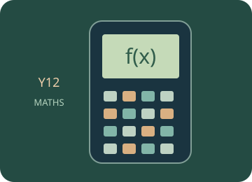

Functions
Graph functions, find roots, intersections and turning points, and interpret models.
Start with the mathematical explanations and worked examples below, then choose a guided calculator exercise. The trainer highlights the next physical key; afterwards, repeat in free practice and interpret your result.

Build the idea, one step at a time.
A function assigns one output to each permitted input. The domain describes allowed inputs and the range describes resulting outputs. A formula, table and graph give different views of the same relationship, and the same-looking curve can represent different quantities depending on the axes.
A root is an input where the output is zero, while an intersection solves equality between two function values. A turning point concerns local change in a function, not simply where it crosses an axis. Set the window and inspect relevant intervals, and remember that restrictions or asymptotes can make a displayed connection misleading.

01 · Read a function as an input–output rule
Writing f(x) names the output corresponding to input x; it is not the product f × x. The domain restricts valid inputs. A graph is a set of pairs (x,f(x)), so an axis label and scale are part of the meaning.
02 · Distinguish roots from intersections
A root solves f(x) = 0, so it is an x-axis crossing or touch where defined. An intersection of f and g solves f(x) = g(x). A numerical answer needs a chosen interval or starting region and a check that the plotted behaviour is not a discontinuity.
03 · Interpret turning points and models
A local maximum or minimum concerns nearby function values. A plotted turning point should be checked within the relevant domain and scale. A mathematical function can be evaluated beyond its useful modelling interval, so ask what each input and output means.
You can read these explanations without operating the simulator. The practical activities, games and revision below let you apply the ideas and check your reasoning.
Now investigate →Use the calculator, one key at a time.
Loading the calculator exercises…
Related manual procedures
The source trainer contains 42 skill pages. Reviewed procedures and outlines awaiting physical-device verification are labelled separately. A guided simulator example does not certify every menu on a physical calculator.
Practise, then explain.
Predict the result, follow the highlighted keys and interpret the calculator’s answer. This is practice: calculator actions are not sent to the teacher dashboard. These calculator activities support the examples and explanations in your class lessons.
Open the free calculator →